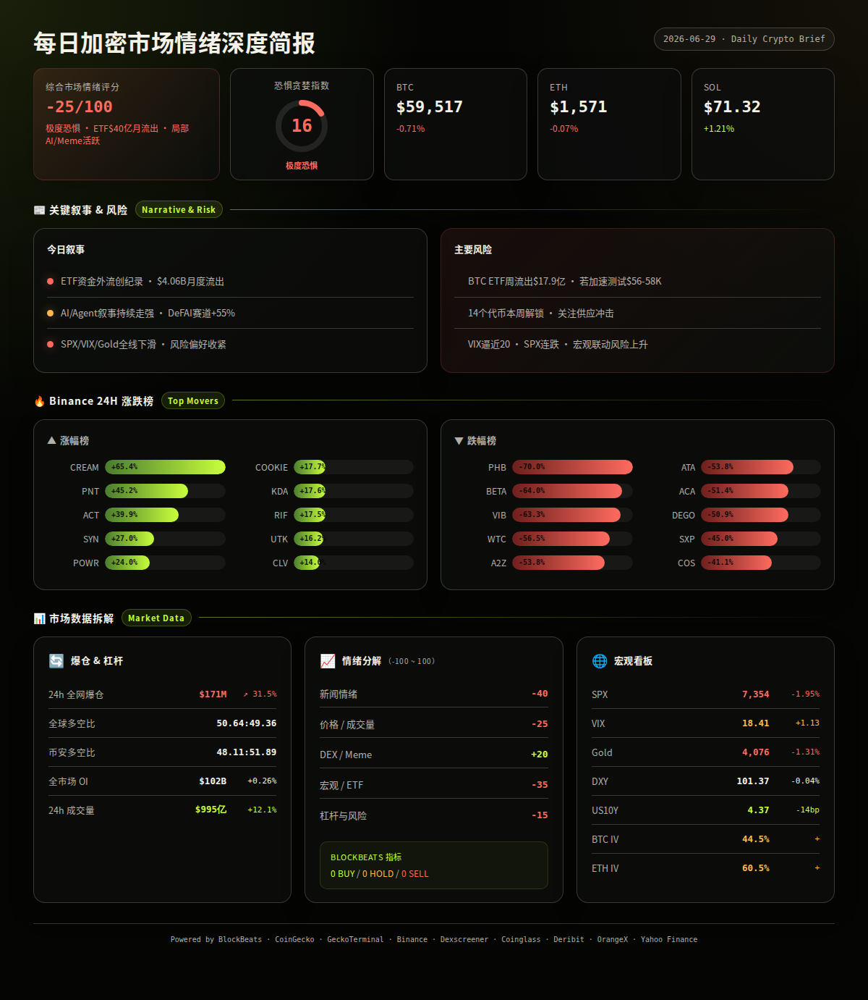
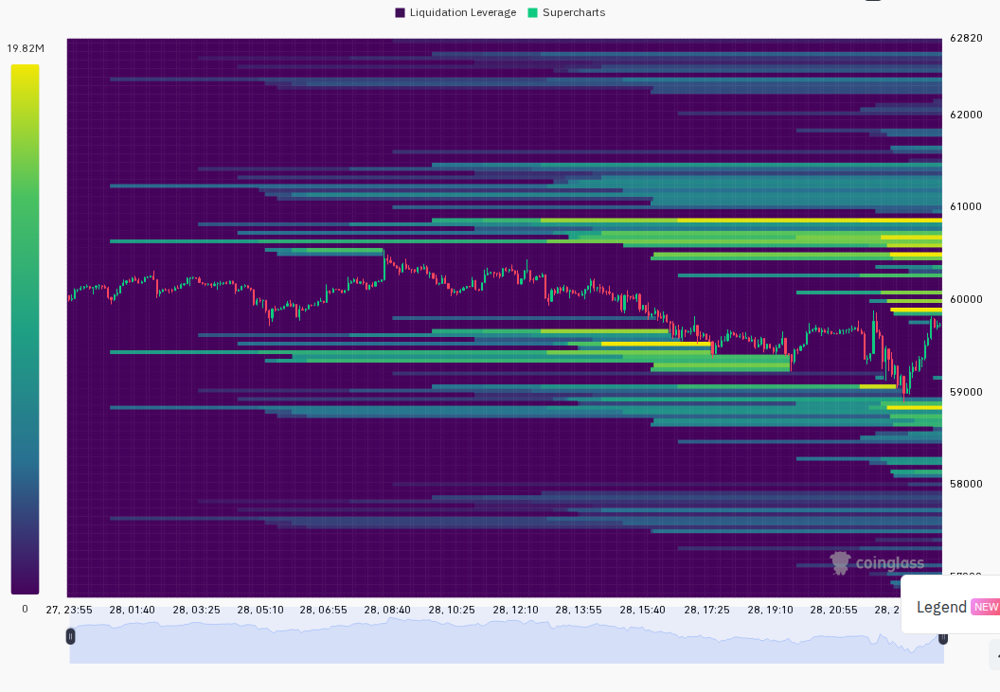
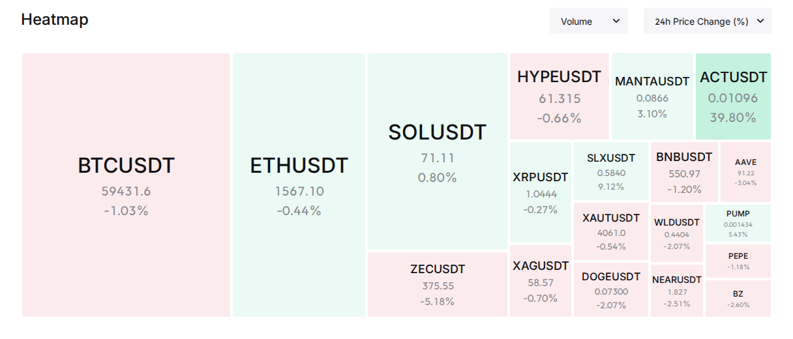

一句话总结：本周加密市场在ETF创纪录流出、全球加息恐慌与半导体暴跌三重压力下，BTC从$64K一路下探至$59K，极度恐惧指数从21降至16并连续4日冻结，但链上指标与价格形成"情绪冰点 vs 数据底部"的结构性背离，SOL逆势跑赢大盘录得近乎平盘。
BTC周价格区间：$58,115（6/26盘中低点）→ $65,623（6/23高点）→ 收$59,517，7日跌幅-6.99%（日报 2026-06-23, 日报 2026-06-29）
ETH周价格区间：$1,533（6/26盘中低点）→ $1,727（6/23高点）→ 收$1,571，7日跌幅-9.03%（日报 2026-06-23, 日报 2026-06-29）
SOL周价格区间：$67.70（6/26低点）→ $71.96（6/27反弹高点）→ 收$71.32，7日微跌-0.86%（日报 2026-06-23, 日报 2026-06-29）
F&G趋势：21→20→18→16→16→16→16，单向滑坡后在16极度恐惧区间冻结4天，历史上类似形态通常预示市场已接近情绪出清末期（日报汇总）
总市值趋势：从约$2.18万亿持续缩水，方向↓；BTC市占率因ETH跌幅更深而被动微升（日报 2026-06-25, 日报 2026-06-29, analysis）
叙事 1: BTC现货ETF创纪录资金外流（持续整周）
· 事件: 单周净流出$17.87亿，月度累计约$40.6亿，BlackRock/Fidelity/Grayscale均持续赎回 → 影响: 🔴 机构结构性离场，压制所有反弹尝试 → 观察: 下周ETF日度资金是否转为净流入（日报 2026-06-29, 日报 2026-06-24）
代表: BTC
叙事 2: 链上底部信号与价格的极端背离（周中出现，6/26-6/28强化）
· 事件: BlockBeats 12项指标全Buy/Hold，Coinbase溢价连续40日负值，mNAV<1.0 → 影响: 🟡 类似2022年11月背离模式，历史上背离后可能再跌15%才见真底 → 观察: BTC能否在$58K上方放量确认背离向上修复（日报 2026-06-28, 日报 2026-06-26）
叙事 3: AI/Agent叙事持续主导社交讨论（持续整周）
· 事件: X平台AI/Agent内容占比15-24%，DeFAI赛道+55.5%，VELVET/ACT受资金关注 → 影响: 🟢 加密与AI交叉叙事仍在形成，但传统AI芯片股暴跌（Apple -6.1%）使传导出现裂痕 → 观察: OpenAI GPT-5.6发布后AI代币是否跟进，传统半导体能否止跌（日报 2026-06-29, 日报 2026-06-26）
代表: VELVET, ACT
叙事 4: 全球加息恐慌与宏观同步抛售（周初爆发，周中缓和）
· 事件: CME 7月加息概率升至34.2%，韩国KOSPI熔断(-8%)，SPX连跌，VIX一度触及20.72 → 影响: 🔴 触发全球风险资产同步抛售，BTC与黄金同跌形成"真风险厌恶" → 观察: 本周ISM PMI和非农数据决定加息预期走向（日报 2026-06-24, 日报 2026-06-27）
叙事 5: Solana逆势独立行情与生态轮动（周中出现，6/27爆发）
· 事件: SOL单日+6.18%领涨大盘，成交量远超BTC/ETH，JTO/HYPE/ONYC等生态币链上净流入 → 影响: 🟢 资金在恐惧环境中选择性押注SOL生态，但资金费率深度为负(-1.54%)显示空头仍在压制 → 观察: SOL能否站稳$70以上3日，若回撤至$68以下则买盘迅速反转（日报 2026-06-27, 日报 2026-06-25）
代表: SOL, JTO
SPX：7,354（6/29低点）← 7,500+（周初水平），全周持续下行，方向↓（日报 2026-06-23, 日报 2026-06-29）
VIX：17.28→19.49→18.63→18.89→18.41→18.41→18.41，周中冲高后回落至正常区间上沿，方向↑后横盘（日报汇总）
Gold：$4,108（6/24跌2%）→ $4,076（6/26跌1.31%），与BTC同步走弱，避险属性失效，方向↓（日报 2026-06-24, 日报 2026-06-26）
DXY：100.35（6/25低点）← 101.45（6/26高点），周中冲击后回落企稳101.36-101.37，方向↑后↓（日报汇总）
US10Y：4.51%（6/23高点）→ 4.37%（6/29低点），全周下行-14bp，方向↓利好风险资产估值（日报汇总）
BTC与SPX：正相关，同步走弱（日报 2026-06-24）；BTC与Gold：反常同步下跌，当前抛售由纯风险厌恶驱动，非美元因素（日报 2026-06-24）
本周兑现风险事件：
· 韩国KOSPI熔断+半导体重创 → 6/24 SK海力士-10%触发熔断、三星-5%、Micron-9%，全球科技股恐慌蔓延至加密市场（日报 2026-06-24）
· BTC跌破$60K心理关口 → 6/26盘中最低$58,115，ETH同步跌破$1,600，触发近$10亿爆仓（日报 2026-06-25, 日报 2026-06-26）
· Deribit季度期权到期 → 6/27交割前后BTC在$59-60K区间宽幅震荡，到期后IV下行（日报 2026-06-25, 日报 2026-06-28）
· 伊朗海峡紧张先升级后缓和 → 6/24解除石油制裁+海峡通航恢复，油价Brent跌4%至$72，地缘溢价消退（日报 2026-06-24, 日报 2026-06-25）
· 以太坊基金会重组裁员的情绪冲击 → 裁员20%+预算削减40%，ETH/BTC汇率持续走弱，ETH全周领跌（日报 2026-06-24）
· Apple -6.1%拖累科技股指数 → 苹果AI成本冲击全产品线涨价，市值单日蒸发$1000亿+"40年未见"的成本冲击叙事（日报 2026-06-26, 日报 2026-06-27）
===WEEKLY_SEG===
本周板块轮动方向特征明显：资金从大盘BTC/ETH与主流Meme撤出，转向极少数高Alpha赛道。
Top 3 上升板块：
· DeFAI（AI+DeFi融合）：6/29日单日+55.5%，CoinGecko板块涨幅第二，由VELVET（Solana链）、Ribbita等新代币驱动；周中出现，脉冲式爆发而非持续走强（日报 2026-06-29）
· 网络安全：6/23日单日+57.6%领跑全场，与AI安全需求逻辑共振，但后续几日未再出现在涨幅榜前列，为一次性脉冲（日报 2026-06-23）
· Solana生态：SOL 6/27单日+6.18%配合JTO(+15.1%)、HYPE(链上净流入)、ONYC等同步走强，是本周唯一出现结构性资金流入的L1生态（日报 2026-06-27）
表退板块汇总：Meme板块-9.2%、Pump Fund Portfolio-17.9%、主流DeFi蓝筹普遍走弱，跌幅榜多只代币（PHB -70%、BETA -64%、VIB -63.3%）持续霸榜全周，疑似退市或项目终止事件（日报汇总）
轮动方向：Meme/Pump.fun投机 → DeFAI/Solana生态/网络安全（从高Beta meme向叙事驱动型赛道切换）（analysis）
SOL（Solana）· 出现 7/7 天 · 周价格区间 $67.70-$71.96 · 7日涨跌 -0.86%
· 叙事: 恐慌中逆势跑赢大盘，SOL/BTC汇率回升，生态资金结构性流入
· 链上/费率: 6/25 OI平稳但成交量翻倍，6/25 SOL资金费率-1.54%深度为负（极端空头主导），6/27后费率回升；DEX成交量同步放大（日报 2026-06-25, 日报 2026-06-27）
· 状态: 仍活跃
ANSEM（Solana）· 出现 1/7 天 · 24h涨幅 +693% · 7日涨跌 N/A（单日爆发）
· 叙事: Solana meme赛道新星，5位KOL同提偏向看多，Dexscreener成交量爆发
· 链上/费率: Dexscreener确认24h暴涨693%，但流动性深度未验证，高换手+低流动性特征明显（日报 2026-06-29）
· 状态: 热度飙升中，需警惕获利了结风险
ACT · 出现 3/7 天 · 周内高涨幅 +39.9% · 7日涨跌 约+40%
· 叙事: AI赛道关联代币，CoinGecko trending上榜，与AI/Agent叙事共振
· 链上/费率: N/A（日报 2026-06-29）
· 状态: 仍活跃
JTO（Solana）· 出现 2/7 天 · 周内高涨幅 +15.1% · 7日涨跌 正收益
· 叙事: Solana生态联动，跟随SOL领涨，Jito作为Solana最大流动性质押协议受益于生态热度
· 链上/费率: N/A（日报 2026-06-27）
· 状态: 仍活跃，与SOL联动
VELVET（Solana）· 出现 1/7 天 · 价格 $1.31 · 7日涨跌 N/A
· 叙事: DeFAI赛道龙头（AI+DeFi融合），CoinGecko板块+55.5%的核心驱动者
· 链上/费率: DEX流动性$11.8亿但24h成交量仅$7.2万，流动性高但换手不足的矛盾需警惕；GT Score/Holder集中度 N/A（日报 2026-06-29）
· 状态: 新热点，需观察持续性
风险: BTC现货ETF创纪录单周流出$17.87亿，月度累计约$40.6亿 → 结果: 已兑现，机构抛压持续压制BTC全周无法有效反弹（日报 2026-06-24, 日报 2026-06-29）
风险: 加息恐慌升级，CME 7月加息概率升至34.2%，韩国KOSPI熔断 → 结果: 已兑现，6/24全球同步抛售，但US10Y全周反而下行-14bp，加息预期周中后降温（日报 2026-06-24, 日报 2026-06-27）
风险: BTC失守$60K心理关口后$58K支撑考验 → 结果: 已兑现，6/26盘中最低$58,115后反弹，$58K支撑暂未有效跌破（日报 2026-06-26）
风险: Coinbase溢价连续40日负值，美国买盘结构性缺位 → 结果: 延续中，全周未有改善（日报 2026-06-28）
风险: Deribit季度期权到期引发剧烈波动 → 结果: 已兑现，6/27前后IV上升，BTC在$59-60K宽幅震荡，到期后波动收敛（日报 2026-06-25, 日报 2026-06-28）
风险: EU MiCA过渡期7月1日截止的不确定性 → 结果: 延续中，短期合规压力尚未释放（日报 2026-06-27）
风险: 杠杆清理不充分，爆仓$9.79亿但OI仅微降 → 结果: 已兑现，6/25-6/26出现第二轮多头清算后OI终于加速下降（日报 2026-06-25, 日报 2026-06-26）
风险: POLYMARKET/CFTC监管调查向DeFi扩散 → 结果: 延续中，Polymarket遭第三方漏洞攻击损失$300万，监管关注未解除（日报 2026-06-28）
兑现率 5/8（已兑现），3/8（延续中）。最impactful的风险是两个：ETF$40.6亿月度流出直接压制了所有技术性反弹；韩国KOSPI熔断+半导体暴跌与黄金/BTC同步下跌形成了罕见的全球同步恐慌，确认了当前"真风险厌恶"而非"BTC避险"格局（analysis）
===WEEKLY_SEG===
日报 6/23 — 6/24、6/25、6/26 AI情景部分因截断缺失，无可验证概率判断（日报 2026-06-23, 日报 2026-06-24, 日报 2026-06-25, 日报 2026-06-26）
回顾 1: 6/23 判断: 情景1(40%) BTC在$63,000-$66,000区间缩量震荡，等PMI/GDP给方向 → 实际: 次日即跌破$63K，周中加速下探至$58K → ❌（日报 2026-06-23）
回顾 2: 6/27 判断: 情景1(45%) BTC在$58,000-$62,000横盘筑底，SOL带领局部山寨行情 → 实际: 6/27-6/29 BTC在$59,517-$60,105区间，SOL生态相对活跃 → ⚠️（方向对但BTC偏向区间下沿，SOL确实跑赢）（日报 2026-06-27）
回顾 3: 6/29 判断: 情景1(35%)超卖反弹至$62K vs 情景2(45%)阴跌寻底$56-58K → 实际: 尚未到验证时间窗口，下周确认（日报 2026-06-29）
🎯 本周AI判断准确率: 0/1 可明确判定正确，1/2 方向正确（含部分正确）= 50%（基于日报中可验证的概率判断，6/24-6/28的AI情景因截断缺失不计入）
· 6/30（周一）— BTC季度期权到期日，名义价值约$45亿 — 🟡 到期前后波动可能放大，IV当前处于低位（日报 2026-06-28）
· 7/1（周二）— 美国ISM制造业PMI — 🔴 若低于50枯荣线强化衰退叙事，对风险资产短期偏空（日报 2026-06-23, 日报 2026-06-28）
· 7/1（周二）— 欧盟MiCA过渡期正式结束 — 🟡 交易所可能调整欧盟业务或下架代币，短期不确定抛售（日报 2026-06-27）
· 7/2（周三）— Securitize (SECZ) 纽交所上市 — 🟢 RWA代币化赛道里程碑，可能带动ONDO/CFG等关联标的（日报 2026-06-27）
· 7/2（周三）— SpaceX正式纳入Nasdaq-100指数 — 🟢 预计$43亿被动资金流入，提振科技板块情绪（日报 2026-06-28）
· 7/3（周四）— 美联储FOMC会议纪要公布 — 🔴 关注加息/降息措辞变化，当前7月加息概率约30%（日报 2026-06-28）
· 7/4（周五）— 美国独立日假期 — 🟡 传统市场休市，加密可能出现低流动性异常波动（日报 2026-06-29）
本周市场以ETF$40.6亿月度流出创纪录与F&G连续4日冻结16收场，处于"极度恐惧中寻找底部"的技术位置。下周核心矛盾在于：链上8-12项Buy信号与Coinbase 40日负溢价之间的背离能否以价格向上修复收场。若周一/周二ETF资金流出放缓至$2亿以下、ISM PMI弱于预期推动降息叙事、且BTC守住$58K上方放量反弹，则6/29日报情景1（超卖反弹至$62K）概率上升；若ETF流出加速叠加MiCA合规抛售，则情景2（考验$56-58K）将成为基准路径。关键观察指标：ETF日度资金流向、BTC $58K支撑有效性与成交量配合、SOL $70支撑。（analysis）
非财务建议声明: 本报告基于过去7天日报数据的合成分析，不构成任何买卖建议。

